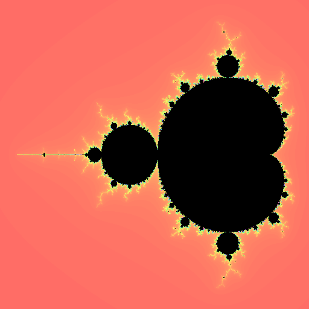
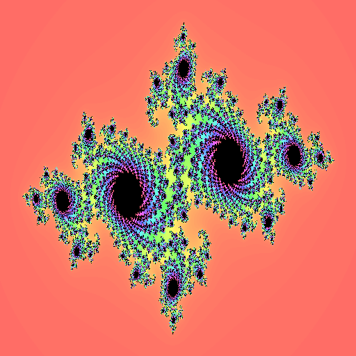
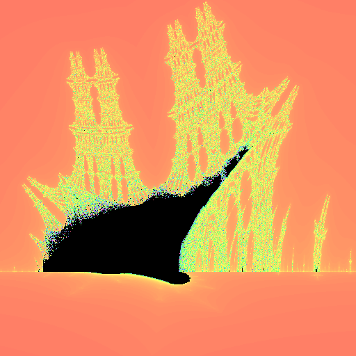
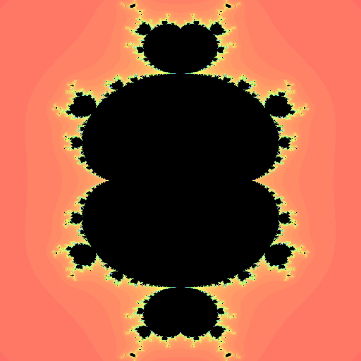

Menu
We all like pretty pictures. They are attractive and shiny and let you show off. Fractals are doubly cool: not only do fractals make pretty pictures, but they are pretty pictures that let you show off your programming skills. As an added bonus, there is geeky, but kinda cool, music about them. As a gentle introduction to real-world programming practices, this term has you developing a program that can generate, display, and save fractals images. By the end of the term, your programs will be able to produce images like these:
   To reflect real-world practices, the project is broken up into 4 three-week-long phases (called "sprints" in agile development). When this first phase ends, your team will have developed a comprehensive set of unit tests validating you can correctly calculate the fractals and the code doing the calculation. Future phases have your team creating and then refining a GUI application which displays and manipulates these fractals. While work is due at the end of each phase, you should remember that the project continues until the end of the term. Writing code that works only for the current phase may be quicker in the short-term, a little planning and design will be much faster in the end. As is often said: Hours of coding makes up for minutes of planning.
Your team will need to use a github repository to share code. In addition to giving you experience with common real-world team development tools, the projects will be linked in the CSE116 classroom. This enables the course staff (e.g., instructors & TAs) to help teams resolve problems as they occur. These instructions are available as a pinned announcement in the course Piazza site or on this page.
The fractals your program will be generating this term are all "escape-time algorithms". Escape-time algorithms imagine the picture is a Cartesian plane (I had to look this up, too -- it means point is defined by its x- and y-coordinates). Each PIXEL (point on this plane) is then colored using the following process:
Set xCalc = current point's x-coordinate
Set yCalc = current point's y-coordinate
Set dist = distance from the point (xCalc, yCalc) to (0,0) using the Pythagorean theorem
Set passes = 0
While dist ≤ 2 and passes < 255 do
Update xCalc and yCalc using the update function defined for the fractal being generated
Increase passes by 1
Set dist = distance from the point (xCalc, yCalc) to (0,0) using the Pythagorean theorem
EndWhile
Set the current point's escape-time equal to passes
Note that there is nothing special about the numbers 2 and 255 in the above algorithm; any positive numbers could instead be used. The number 2 is the "escape distance" (the distance above which we expect the series will eventually reach infinity) and the number 255 determines the maximum number of steps that will be considered. Replacing these with other numbers does not change the fractal definition, just how it is visualized. Future phases may (or may not) change what these values will be.
The range of x- and y-coordinates to use is specific to each fractal. These ranges are stated below (just after the fractal's update function). They are not important, but were selected because they make for pretty pictures. It is also possible that these could be changed. For this first phase, you will need to split the ranges into 512 equally-spaced rows and 512 equally-spaced columns. To generate the entire fractal, you simply calculate the escape-time for each of these 262144 coordinate pairs. (The number 262144 is equal to 512 * 512 or the number of row & column combination). The final fractal results should be returned as a 2-d array on int.
Details on the fractals you will be calculating:
It is important that each group follow these requirements. In keeping with an iterative development model, this first phase is limited to calculating the escape-times for each fractal. Future phases will add features. Some of these features may require modifying assumptions from this phase. While good designs will easily adapt to these changes, groups that do not spend time and thinking through their project's design will find that future phases require major rewrites. Remember: hours of coding makes up for minutes of planning.
You must ABSOLUTELY NOT create ANY KIND of user interface for phase 1. Since the fractal generation code is critical for future phases, this phase focuses on developing (and passing) a solid set of JUnit test cases which verify your fractal generation code works. The JUnit tests listed in the phase grading rubric are the minimum set of test cases you should be writing.
In proper test-driven development, JUnit tests are executable specifications and are written prior to the implementation code. While this can be difficult at first, practice helps TDD become second nature AND helps you write better code AND reduces the total programming time needed. Plus, would you rather struggle now or in your first job or internship?
To "help" you get this practice, course staff will only review JUnit tests and the code executed by the JUnit. NO EXCEPTIONS WILL BE MADE.
Most organizations using agile development also practice Collective Ownership. This concept means that the ENTIRE team has the right to change any document, but also that the ENTIRE team is responsible for EVERY mistake.
To give you practice with this concept, each team is required to create and use a Git repository for their project on github. Recitation TAs will help you start this process, but you can refer back to these tutorials:
Every programmer has their preferred way to format code and believes it to be superior to all others. Every programmer is wrong (except me). To avoid fights, companies and open-source projects set specific standards that must be followed. For this project, your team's code MUST meet the following standards:
Communication quality is the best predictor of whether a project will succeed or fail. This includes communication:
Pair programming is a core tenet of agile software development. The Agile Alliance even includes a section with suggestions for how to improve your pair programming skills. For those looking for even more help, YouTube also has some excellent videos:
To demonstrate how important pair programming is, some companies include pair programming in job interviews.It is important that there is a roughly equal division of labor amongst teammates. It is completely unacceptable for one person to do most of the work. At the end of each phase, points will be split up between teammates based upon how much of the work they were reported to have done. It is therefore important for each person to do their fair share.
If you are having trouble with an unmotivated group member you should seek to solve the problem at the group level first. If this does not work, you must seek the aid of your recitation TA. If this does not work, your recitation TA can have you talk to the course instructor.
Never attend a meeting that does not have an agenda. It will only waste your time. A meeting that does not have minutes is also a waste; any decisions will be forgotten.
Your team MUST meet during your recitation section. This meeting will occur after the TAs presentation and should plan out your next week's work. To make certain this time is not wasted, you MUST use the following template to record minutes from each meeting. (This format also doubles as the agenda for your next meeting). You can find a template in your group's MeetingMinutes folder in the repository. You may organize your minutes in this folder in whatever way works best for your group. Taking minutes requires effort and this should be considered when balancing workloads among members.
Meeting Minutes for _______________:
The project submission for a team is graded as a whole, but each team member receives an individual grade which is based on that submission grade and the peer evaluations received from their teammates. The peer evaluation will be done via an on-line survey. Instructions for completing the on-line survey will be provided at the end of each phase.
Phase #1 can only be submitted by the team member whose username comes first alphabetically. Submission by other students will not be accepted nor can they be used to show that work was completed before the submission deadline. We strongly encourage each team schedule a meeting which includes all members to do the Web-CAT submission.
The project submission must contain the entire Eclipse project including the properly Javadoc'd source code. This includes both the implementation code AND the JUnit test code.
The team grades for phase #1 will use the following rubric:
Phase #1 can only be submitted by the team member whose username comes first alphabetically. Submission by other students will not be accepted nor can they be used to show that work was completed before the submission deadline. We strongly encourage each team schedule a meeting which includes all members to do the Web-CAT submission.
The project submission must contain the entire Eclipse project including the properly Javadoc'd source code. This includes both the implementation code AND the JUnit test code.
{kind=link}